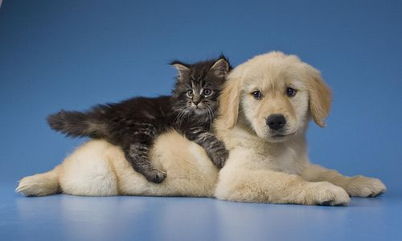

About us
Welcome to Paws & Whiskers Pet Shop, your one-stop destination for all things pet-related! At Paws & Whiskers, we believe that pets are more than just animals—they are cherished members of the family. Our mission is to provide pet owners with the highest quality products, expert advice, and exceptional service to ensure that every pet lives a happy, healthy, and fulfilling life.
Our Story
 Paws & Whiskers was founded out of a genuine love for animals and a commitment to their well-being. Our journey began in 2109 when we decided to turn this lifelong passion for pets into a reality. Starting as a small neighborhood store, we have grown into a beloved community hub where pet owners come to find the best products and reliable information.What We Offer
♦ Wide Range of Products: From nutritious food and tasty treats to fun toys and cozy beds, we stock everything your pet needs to thrive. We carefully select each item to ensure it meets our high standards of quality and safety.
♦Expert Advice: Our team of knowledgeable staff is always on hand to offer guidance on pet care, nutrition, and training. Whether you're a first-time pet owner or a seasoned pro, we're here to help.
♦Health & Wellness: We carry a variety of health and wellness products, including supplements, grooming supplies, and healthcare essentials to keep your pet in peak condition.
♦Community Engagement: We believe in giving back to the community. Paws & Whiskers regularly hosts adoption events, pet care workshops, and charity drives to support local animal shelters and rescue organizations.
 At Paws & Whiskers, we are dedicated to creating a welcoming and supportive environment for both pets and their owners. Our commitment to customer satisfaction means we are always striving to improve our offerings and services. We take pride in being a trusted resource for pet lovers in our community and beyond.
Thank you for choosing Paws & Whiskers Pet Shop. We look forward to serving you and your furry friends!
Warm regards,
The Paws & Whiskers Team
At Paws & Whiskers, we are dedicated to creating a welcoming and supportive environment for both pets and their owners. Our commitment to customer satisfaction means we are always striving to improve our offerings and services. We take pride in being a trusted resource for pet lovers in our community and beyond.
Thank you for choosing Paws & Whiskers Pet Shop. We look forward to serving you and your furry friends!
Warm regards,
The Paws & Whiskers Team